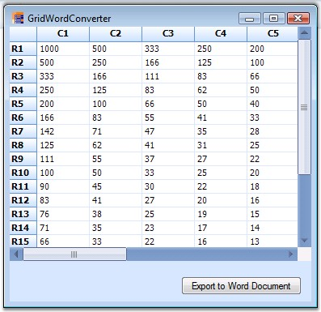
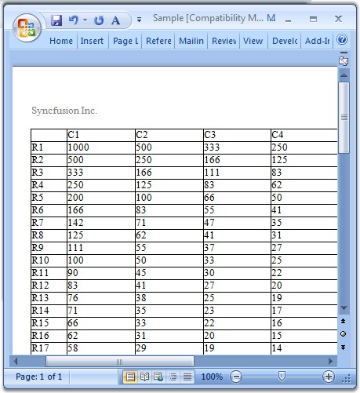

Export to Word is one of the most common functionalities that are required in the .NET world. The Essential Grid control has in-built support for Word Export. Users can download the data from the Grid Control into a Word document for offline verification and/or computation. This can be achieved by making use of the GridWordConverter class. This section will walk you through the conversion of the contents of the grid to a word file as well as discuss the various converter options.
GridWordConverter class derives from GridWordConverterBase. It contains a number of methods that helps in exporting different components of the grid.
Properties
Here is a list of the properties offered by GridWordConverter. By setting these properties, you could be able to choose the elements you need to export.
|
Property |
Description |
|
ShowHeader |
Specifies if header should be displayed. |
|
ShowFooter |
Indicates if footer should be displayed. |
Method
GridWordConverter control provides a method called GridToWord. This is the method that does the conversion of grid contents to a word file. It accepts two parameters: grid to be converted and filename of the destination word document.
Syntax
|
[C#]
GridWordConverter converter = new GridWordConverter(); converter.GridToWord("Grid.doc", this.gridControl1); |
|
[VB.NET]
Dim converter As GridWordConverter = New GridWordConverter() converter.GridToWord("Grid.doc", Me.gridControl1) |
Events
DrawHeader and DrawFooter are the events offered by the GridWordConverter that aids in adding as well as customizing the header and footer in the destination word document.
Sample Output
Below images depicts the conversion of grid content to a word file.

Figure 138: Grid to be Exported

Figure 139: Grid Exported to a Word File
A sample demonstrating this feature is available under the following sample installation path.
<Install Location>\Syncfusion\EssentialStudio\[Version Number]\Windows\Grid.Windows\Samples\2.0\Export\Word Converter Demo